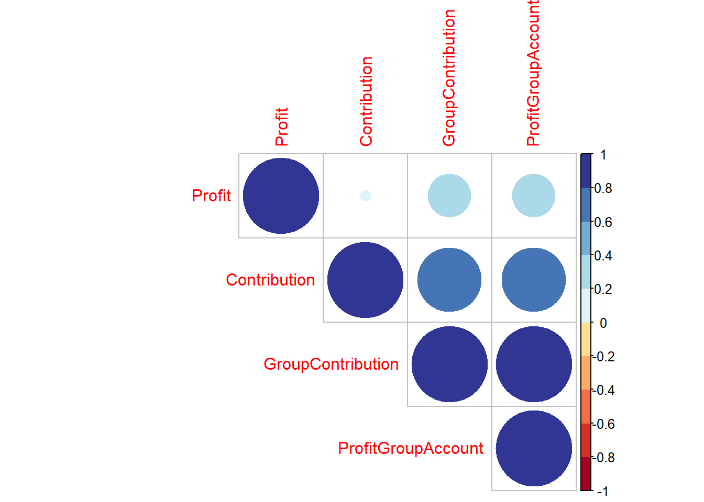
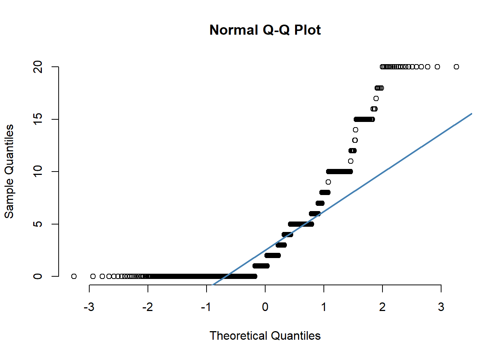

# New packages that need to be installed
install.packages("corrplot") #for correlation analysis
install.packages("RColorBrewer") #provides color palettes
install.packages("FSA") #for Dunn post-hoc test# Load needed packages
library(openxlsx)
library(tidyverse)
library(corrplot)
library(RColorBrewer)
library(FSA) # Read data
data <- read.xlsx("Long Data.xlsx",1)# Test the correlation between contribution and age
cor.test(data$Age, data$Contribution,
method = "pearson") #method can also be "spearman" or "kendall"##
## Pearson's product-moment correlation
##
## data: data$Age and data$Contribution
## t = 2.0608, df = 906, p-value = 0.0396
## alternative hypothesis: true correlation is not equal to 0
## 95 percent confidence interval:
## 0.003262079 0.132776285
## sample estimates:
## cor
## 0.06830696# Compute correlation matrix and visualize it
# First: select the numerical variables
NumVars <- data %>%
dplyr::select(Profit, Contribution, GroupContribution, ProfitGroupAccount) %>%
drop_na
# Second: get the corrlation matrix
M <-cor(NumVars)
M## Profit Contribution GroupContribution ProfitGroupAccount
## Profit 1.00000000 0.02118767 0.3196613 0.3196613
## Contribution 0.02118767 1.00000000 0.7137780 0.7137780
## GroupContribution 0.31966132 0.71377801 1.0000000 1.0000000
## ProfitGroupAccount 0.31966132 0.71377801 1.0000000 1.0000000# Third: plot correlation matrix
corrplot(M, type="upper", order="hclust",
col=brewer.pal(n=10,name="RdYlBu"))
# Check if contribution is normally distributed
qqnorm(data$Contribution, pch = 1, frame = FALSE)
qqline(data$Contribution, col = "steelblue", lwd = 2)
# Shapiro test for normality
shapiro.test(data$Contribution)##
## Shapiro-Wilk normality test
##
## data: data$Contribution
## W = 0.74951, p-value < 2.2e-16The p-value < 0.05 implying that the distribution of the data is significantly different from normal distribution. Although Contribution is not normal, we will still show how to do parametric tests and their equivalent non-parametric tests.
# Contribution males vs contribution females
t.test(Contribution ~ Gender, data = data,
alternative = c("two.sided"),
mu = 0, paired = FALSE, var.equal = FALSE,
conf.level = 0.95)##
## Welch Two Sample t-test
##
## data: Contribution by Gender
## t = -2.4068, df = 337.96, p-value = 0.01663
## alternative hypothesis: true difference in means is not equal to 0
## 95 percent confidence interval:
## -1.6900540 -0.1699332
## sample estimates:
## mean in group Female mean in group Male
## 3.264451 4.194444# Contribution vs FinancialStatus
mytest <- aov(Contribution ~ FinancialStatus, data = data)
summary(mytest)## Df Sum Sq Mean Sq F value Pr(>F)
## FinancialStatus 2 327 163.6 7.27 0.000737 ***
## Residuals 905 20360 22.5
## ---
## Signif. codes: 0 '***' 0.001 '**' 0.01 '*' 0.05 '.' 0.1 ' ' 1
## 52 observations deleted due to missingness# Post-hoc test
# ANOVA tells us if there are differences among group means, but not what the differences #are.
#To find out which groups are statistically different from one another, you can perform a #Tukey’s Honestly Significant Difference (Tukey’s HSD) post-hoc test for pairwise #comparisons.
tukey_test<-TukeyHSD(mytest)
tukey_test## Tukey multiple comparisons of means
## 95% family-wise confidence level
##
## Fit: aov(formula = Contribution ~ FinancialStatus, data = data)
##
## $FinancialStatus
## diff lwr upr p adj
## Low-High 0.9272727 -0.5547608 2.409306 0.3064712
## Medium-High 1.2420354 0.4724897 2.011581 0.0004731
## Medium-Low 0.3147627 -1.1524855 1.782011 0.8695880# Contribution males vs contribution females
wilcox.test(Contribution ~ Gender, data=data) ##
## Wilcoxon rank sum test with continuity correction
##
## data: Contribution by Gender
## W = 67115, p-value = 0.01802
## alternative hypothesis: true location shift is not equal to 0# Contribution vs FinancialStatus
mytest2 <- kruskal.test(Contribution ~ FinancialStatus, data = data)
mytest2##
## Kruskal-Wallis rank sum test
##
## data: Contribution by FinancialStatus
## Kruskal-Wallis chi-squared = 11.052, df = 2, p-value = 0.003982# Post-hoc test: Dunn test for multiple comparisons of groups
DT <- dunnTest(Contribution ~ FinancialStatus,
data=data,
method="bh") # Adjusts p-values for multiple comparisons;
# See ?dunnTest for options
DT## Comparison Z P.unadj P.adj
## 1 High - Low -0.7206962 0.4710964455 0.471096445
## 2 High - Medium -3.3176502 0.0009077808 0.002723342
## 3 Low - Medium -1.0120902 0.3114949355 0.467242403# Post-hoc test: pairwise Mann–Whitney U-tests for multiple comparisons
PT <- pairwise.wilcox.test(data$Contribution,
data$FinancialStatus,
p.adjust.method="fdr")
# Adjusts p-values for multiple comparisons;
# See ?p.adjust for options
PT##
## Pairwise comparisons using Wilcoxon rank sum test with continuity correction
##
## data: data$Contribution and data$FinancialStatus
##
## High Low
## Low 0.5108 -
## Medium 0.0026 0.5108
##
## P value adjustment method: fdr# Scenario1 vs Gender
# Produce contingency table
S1_Gender <- data %>%
group_by(Gender, Scenario1) %>%
summarise(Frequency = n()) %>%
spread(Scenario1,Frequency)
S1_Gender## # A tibble: 2 x 3
## # Groups: Gender [2]
## Gender X Y
## <chr> <int> <int>
## 1 Female 420 320
## 2 Male 140 80# Chi-square test
CQ_test <- chisq.test(data$Gender, data$Scenario1)
CQ_test##
## Pearson's Chi-squared test with Yates' continuity correction
##
## data: data$Gender and data$Scenario1
## X-squared = 3.0252, df = 1, p-value = 0.08198# To see expected counts
CQ_test$expected## data$Scenario1
## data$Gender X Y
## Female 431.6667 308.33333
## Male 128.3333 91.66667